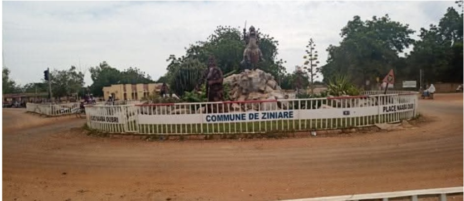
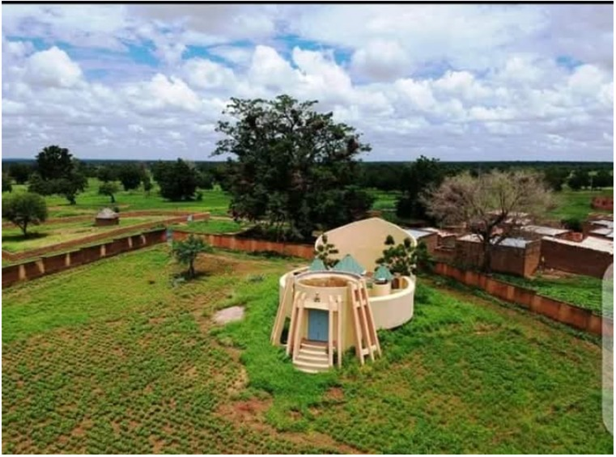
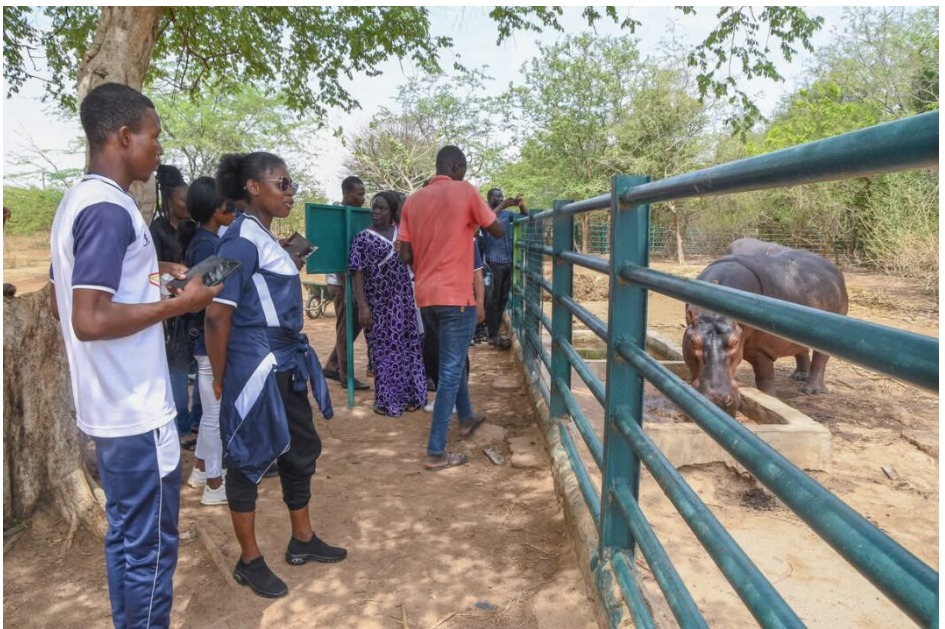
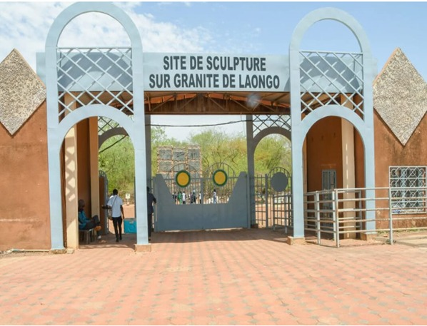

Ouagadougou, capitale du Burkina Faso
« Art, nature et proximité de la capitale »
Pays : Burkina Faso
Statut : Région
Provinces : 3
Départements : 20
Chef-lieu : Ziniaré
Gouverneur : Blaise Corneille Ouédraogo (depuis 2011)
Code ISO 3166-2 : BF-11
Code INSD : 08
Population (2024) : 1 096 500 hab.
Densité : 128 hab./km²
Coordonnées : 12°35'N, 1°11'O
Superficie : 8 545 km²
Fuseau horaire : UTC+0
Indicatif téléphonique : +226
Présentation
Ouagadougou, capitale politique et administrative du Burkina Faso, concentre les institutions nationales, les ambassades, les grandes entreprises et les universités. C'est également la capitale culturelle avec le FESPACO (festival panafricain du cinéma) et le SIAO (salon international de l'artisanat).
Située au nord-est de la capitale Ouagadougou, la région d’Oubri est une terre riche d’histoire et de traditions. Son nom rappelle Naaba Oubri, troisième petit-fils du grand chef Ouédraogo, fondateur du royaume mossi de Wogdgo, l’ancêtre d’Ouagadougou. Cette région, qui s’étend aujourd’hui sur un territoire réorganisé en trois provinces, s’impose comme un véritable carrefour entre passé et modernité, offrant à la fois un patrimoine culturel exceptionnel et des opportunités touristiques en plein essor.
Depuis juillet 2025, le Burkina Faso a adopté un nouveau découpage administratif qui rebaptise l’ancienne région du Plateau-Central sous le nom de région d’Oubri, en hommage à son illustre ancêtre. Cette région est désormais composée de trois provinces distinctes : Ganzourgou, Kourwéogo et Oubritenga, cette dernière étant également appelée Bassitenga. Chacune de ces provinces contribue à la richesse culturelle et touristique de la région. Ganzourgou est réputée pour ses terres fertiles et ses marchés traditionnels dynamiques, tandis que Kourwéogo se distingue par ses activités pastorales et artisanales. Oubritenga, quant à elle, est reconnue pour son patrimoine mossi ancestral et sa proximité avec le célèbre parc de sculptures de Laongo

Le patrimoine culturel d’Oubri est profondément ancré dans les traditions mossi. Les cérémonies coutumières, où les danses et musiques royales occupent une place centrale, témoignent du lien vivant avec l’héritage de Naaba Oubri et de ses successeurs. L’artisanat local, avec ses techniques ancestrales de tissage, de poterie, de sculpture sur bronze et de travail du cuir, perpétue des savoir-faire transmis de génération en génération. Ces créations portent souvent des motifs symboliques liés à l’histoire et aux croyances des Mossi, offrant ainsi un pont entre l’art et l’identité culturelle.
Cette région est également un haut lieu de la création artistique contemporaine grâce au parc de sculptures de Laongo. Ce site exceptionnel à ciel ouvert accueille des artistes venus du monde entier qui transforment les blocs de granite en œuvres monumentales. Ce dialogue entre la nature brute et la créativité humaine attire chaque année de nombreux visiteurs, amateurs d’art et de nature

Le dynamisme culturel d’Oubri se manifeste aussi à travers plusieurs festivals majeurs qui rythment la vie locale. Le Festival International de Sculpture de Laongo est sans doute l’événement le plus connu, mettant en lumière le travail des sculpteurs venus de divers horizons. Les Journées Culturelles de Ziniaré célèbrent quant à elles la musique, la danse et la gastronomie, tandis que le Festival des Masques et Traditions du Ganzourgou valorise les arts sacrés et les cérémonies traditionnelles. Ces manifestations participent non seulement à la préservation des patrimoines immatériels, mais aussi à la promotion du tourisme culturel.

L’accueil des visiteurs dans la région d’Oubri s’appuie sur une offre hôtelière variée. À Ziniaré, capitale régionale, plusieurs hôtels tels que l’Hôtel Laongo, l’Auberge Napadé et le Ziniaré Palace Hôtel proposent un hébergement confortable avec des prestations adaptées aux touristes. De plus, dans les provinces voisines, des gîtes ruraux et campements permettent aux visiteurs de s’immerger pleinement dans la vie locale et la nature environnante

Les sites incontournables d’Oubri reflètent cette richesse multiple. Le mausolée de Naaba Oubri demeure un lieu de mémoire important où se perpétuent les rites royaux. Le parc de sculptures de Laongo, quant à lui, fascine par son mélange unique d’art et de paysage. Enfin, les marchés artisanaux de Ziniaré et les villages environnants offrent une plongée authentique dans la culture mossi et ses traditions vivantes.

En somme, la région d’Oubri est un territoire où l’histoire et la culture s’entrelacent pour offrir aux visiteurs une expérience unique. Entre traditions royales, festivals vibrants, art contemporain et accueil chaleureux, elle incarne une part essentielle de l’âme burkinabè. Son nouveau découpage administratif à trois provinces consolide son rôle de pôle culturel et touristique, prêt à s’ouvrir davantage aux échanges nationaux et internationaux.
Tourisme & Culture
Ressources naturelles
Potentiel agricole 🌾
Potentiel éducatif 🏫
Potentiel commercial 🛒
Artisanat traditionnel
Spécialités culinaires
Galerie photos
Carte de situation
Provinces
Le saviez-vous ?
Le symposium de Laongo a accueilli plus de 200 sculpteurs venus de 35 pays différents depuis sa création. Les œuvres monumentales sont exposées en plein air sur un site de 20 hectares, accessible à tous gratuitement.